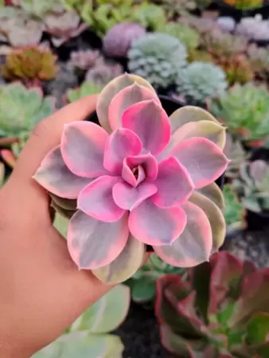
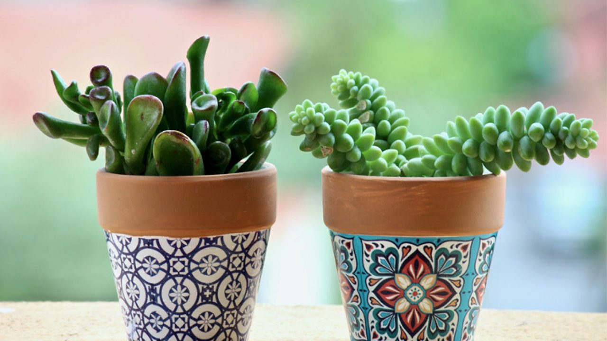

suculentas
As suculentas, também conhecidas como plantas suculentas ou suculentas xerófitas, são plantas fascinantes conhecidas por sua capacidade de armazenar água em suas folhas, caules e raízes. Essa característica única permite que essas plantas sobrevivam em ambientes áridos e secos, como desertos e regiões com pouca água. Além de sua notável adaptação à escassez de água, as suculentas também são apreciadas por sua beleza variada e facilidade de cultivo, tornando-as populares entre os entusiastas de jardinagem em todo o mundo.
Características e Variedades:
.png)
Folhas Carnudas: A característica mais distintiva das suculentas são suas folhas carnudas e cheias de água. Essa estrutura única permite que a planta armazene grandes quantidades de água para uso em períodos de seca.
Formas e Tamanhos: As suculentas apresentam uma infinidade de formas, tamanhos e texturas. Algumas têm folhas arredondadas e achatadas, como a Echeveria, enquanto outras, como a Agave, têm folhas afiadas e pontiagudas.
Cores Atraentes: Essas plantas vêm em uma variedade impressionante de cores, desde tons de verde suave até vermelhos intensos e roxos exuberantes. Algumas suculentas também têm variações de cores em suas folhas, o que as torna ainda mais interessantes.
Floração Surpreendente:Embora nem todas as suculentas floresçam, muitas produzem flores deslumbrantes e vistosas. As inflorescências podem variar de pequenas e discretas a grandes e impressionantes, adicionando um toque extra de beleza a essas plantas já encantadoras.
Habitat e Cultivo:
Origem:A maioria das suculentas é nativa de regiões áridas e semiáridas, como desertos e áreas com baixos índices de precipitação.
Clima: As suculentas preferem climas quentes e ensolarados, mas muitas variedades podem se adaptar a climas mais amenos, desde que estejam protegidas do frio extremo.
Solo: O solo para suculentas deve ser bem drenado, permitindo que o excesso de água escoe facilmente. Solos arenosos ou com perlita são ideais para manter as raízes secas e saudáveis.
Rega: Embora sejam conhecidas por sua tolerância à seca, as suculentas ainda precisam de água regularmente. A regra geral é regá-las quando o solo estiver completamente seco.
Cultivo em Vasos:As suculentas são excelentes plantas de interior e podem ser cultivadas em vasos em ambientes domésticos ou de escritório. Vasos com furos de drenagem são essenciais para evitar o acúmulo de água em excesso.
Usos e Aplicações:
Jardinagem e Paisagismo: As suculentas são altamente valorizadas em projetos de jardinagem e paisagismo, seja para criar jardins rochosos, canteiros de plantas suculentas ou jardins de contêineres.
Arranjos e Decoração: Devido às suas formas e cores únicas, as suculentas são amplamente utilizadas em arranjos florais, buquês e decoração de eventos.
Terapia de Jardinagem: O cultivo e cuidado de suculentas podem ser uma forma terapêutica de aliviar o estresse e promover o bem-estar emocional.
Medicina Tradicional: Algumas espécies de suculentas têm sido usadas em medicina tradicional para tratar problemas de pele, queimaduras e outras condições de saúde.
Conclusão: As suculentas são verdadeiras obras-primas da natureza, com sua capacidade única de sobreviver em condições extremamente áridas e sua aparência deslumbrante. Sua versatilidade, variedade e facilidade de cultivo tornam-nas uma escolha popular tanto para jardineiros experientes quanto para iniciantes. Ao cultivar suculentas em jardins, vasos ou dentro de casa, somos lembrados da resiliência da natureza e da beleza que ela pode nos proporcionar mesmo nos ambientes mais hostis.